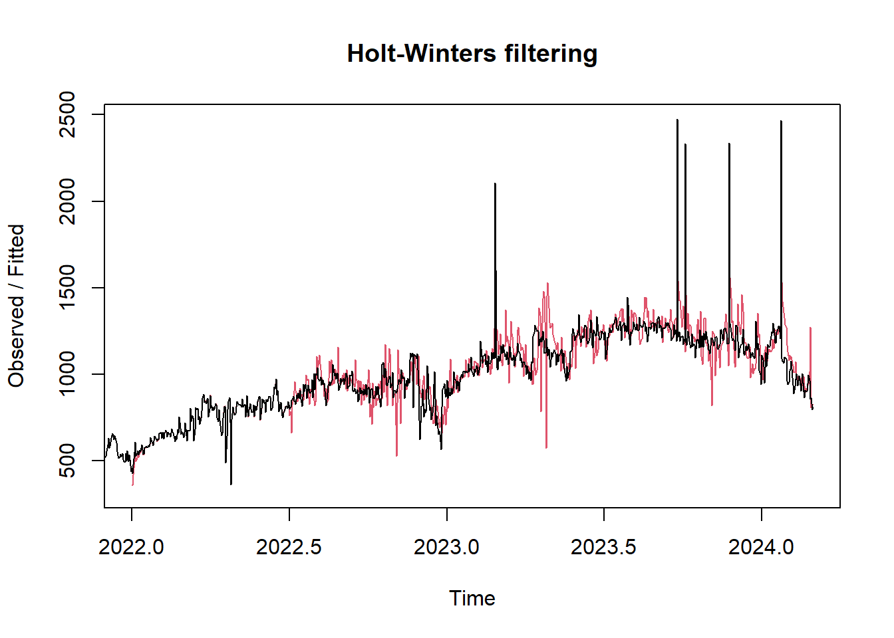
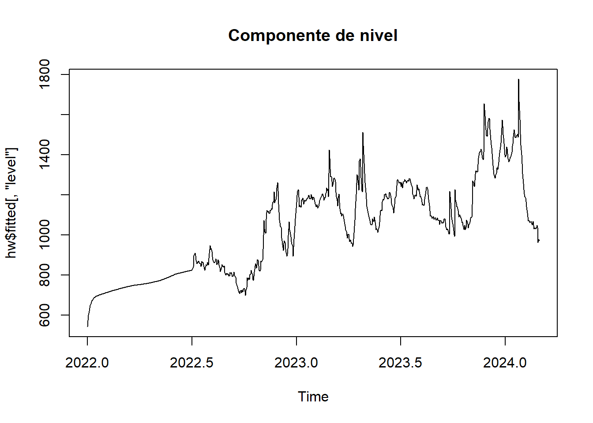
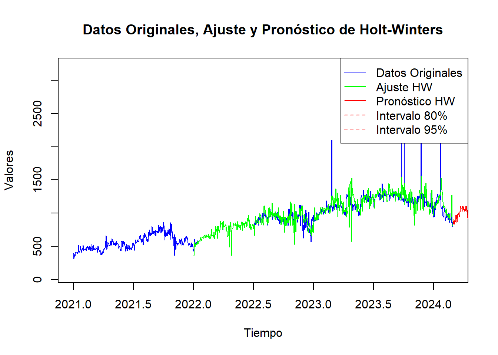

Capítulo 5 Análisis de Estacionariedad
5.1 Carga de Serie
Importamos la serie de tiempo del tráfico LTE y verificamos su rango de fechas
fecha_inicio <- as.Date("2021-01-01")
serie_tiempo <- ts(datos$x, start = c(format(fecha_inicio, "%Y"), format(fecha_inicio, "%j")), frequency = 365)Verificamos la fecha inicio y fecha fin
start_time <- start(serie_tiempo)
end_time <- end(serie_tiempo)
frequency <- frequency(serie_tiempo)
min_date <- as.Date(paste(start_time[1], start_time[2], sep="-"), "%Y-%j")
max_date <- as.Date(paste(end_time[1], (end_time[2]-1) / frequency * 365, sep="-"), "%Y-%j")
min_date## [1] "2021-01-01"## [1] "2024-02-28"5.2 Análisis
Dentro la imagen podemos observar lo siguiente
Observed:: Nos muestra la serie original , es decir la serie de tráfico LTE sin modificaciones.
Tred: En la tendencia nos muestra la eliminacion del ruido y estacionarie sin embargo se observan los picos de tráfico al final.
Seasonal:: En la Estacionariedad podemos observar un patrón claro y repetitivo , lo cual indica que existe estacionariedad en los datos del tráfico en esta de serie de tiempo.
Random: Este gráfico muestra residuales o fluctuaciones que nos se pueden explicar , ya que puede ser atípicos o ruido, para estos casos particulares en tráfico hay que hacer investigaciones de las causas de estas anomalias.

5.3 Diferenciacion y Logaritmos
Para poder realizar un ARIMA es importante tener estacionariedad , por eso debemos convertirlo en estacionaria por medio de una transformación de logaritmos o diferencias
5.3.1 Logaritmos
La función logaritmica es una función continua deja los mínimos y máximos bajo logaritmo, estabilizando la varianza .
Para el caso de logaritmos usamos la función “log”
 Al ver la gráfica no podemos apreciar estacionariedad ya que se ven caidas y bajadas y su media es diferente de cero.
Al ver la gráfica no podemos apreciar estacionariedad ya que se ven caidas y bajadas y su media es diferente de cero.
Verificamos si es estacionaria por medio de la prueba de “Dickey-Fuller” con la libreria “adf”
##
## Augmented Dickey-Fuller Test
##
## data: serielog
## Dickey-Fuller = -2.6979, Lag order = 10, p-value = 0.2829
## alternative hypothesis: stationaryEl resultado de es p-value = 0.2829 al ser mayor a 0.05 se puede determinar que es una serie no estacionaria
Con logaritmo no logramos conseguir Estacionariedad
5.3.2 Diferencias
Antes de realizar las diferencias podemos ejecutar el comando “ndiffs” para saber cuantas diferencias necesitamos
## [1] 1El resultado es “1” diferencia para convertir la serie en estacionaria
seriedif=diff(serie_tiempo)
plot(seriedif,lty="dashed",col="red",main="Serie de Tiempo de Tráfico LTE")
Al ver la gráfica podemos apreciar que los datos estan alrededor de la misma media , en este caso de “cero”
Para verificar si es estacionaria lo hacemos por medio de la prueba de “Dickey-Fuller” con la libreria “adf”
## Warning in adf.test(seriedif, alternative = "stationary"): p-value smaller than
## printed p-value##
## Augmented Dickey-Fuller Test
##
## data: seriedif
## Dickey-Fuller = -14.6, Lag order = 10, p-value = 0.01
## alternative hypothesis: stationaryEl resultado de es p-value = 0.01 al ser menor a 0.05 se puede determinar que es una serie que si es estacionaria
Podemos validar si necesitamos mas diferenciaciones con el comando “ndiffs”
## [1] 0El resultado es cero por lo cuál no necesitamos más diferenciaciones
Análisis de autocorrelación
par(mfrow=c(2,2),mar=c(4,4,4,1)+.1)
plot(serie_tiempo,ylab="Tráfico LTE")
Acf(serie_tiempo,main="Serie No Estacionaria")
plot(seriedif)
acf(seriedif,main="Serie Estacionaria") Podemos observar que el primer gráfico ” no es estacionario” tiene una tendencia , la cual es verificada por la autocorrelación de la derecha . el cual supera el umbral de líneas azules (+/-)1.96
Podemos observar que el primer gráfico ” no es estacionario” tiene una tendencia , la cual es verificada por la autocorrelación de la derecha . el cual supera el umbral de líneas azules (+/-)1.96
En los gráficos inferiores se puede ver una media constante , varianza constante, y se puede ver en la gráfica de la derecha la comprobación de autocorrelacion donde se visualiza que no supera el umbral de (+/-)1.96
5.4 Método de Holt Winters
Para hacer prediciones utilizando datos con tendencia y estacionalidad, recurrimos al método estacional de Holt-Winters . Este método se puede implementar con una estructura “Aditiva” o una estrucutra “multiplicativa”
El modelo aditivo se utliza mejor cuando la tendencia estacional es la misma magnitud en todo el conjunto de datos, mientras que el modelo multiplicativo cuando la magnitud de la estacionalidad cambia a medida que aumenta o disminuye el tiempo el tiempo

Al ver la gráfica al tener una periocidad diaria no es claro si usar el modelo aditivo o multiplicativo por lo cual evaluamos la homocedasticidad de los residuos .
## [1] 365Modelo Aditivo

Modelo Multiplicativo
# Descomposición Multiplicativa
modelo_multiplicativo <- decompose(serie_tiempo, type="multiplicative")
plot(modelo_multiplicativo)
Al revisar los dos modelos en la parte de residuos podemos ver que el multiplicativo es mas viable ya que parecen mas aleatorios y con menos patrones sistematicos que el modelo aditivo
Para volver a verificar vamos a usa la descomposición STL (Seasonal and Trend decomposition using Loess) y un modelo ETS(Error, Trend , Seasonality )
 En la gráfica la linea negra representa los datos observados , la linea azul y las bandas al final representan los pronosticos y sus intervalos de confianza , la predicion muestra picos y cambios abruptos lo que sugiere una variabilidad de los datos lo que podria estar relacionado con el nivel dela serie . El modelo utilizado es una ETS(M,N,N) (Multiplicativo ,Sin Tendencia(N), Sin estacionalidad (N) ) , esto indica que el modelo asume qu los errores se multiplican por el nivel de la serie para mejorar la variabilidad de los datos
En la gráfica la linea negra representa los datos observados , la linea azul y las bandas al final representan los pronosticos y sus intervalos de confianza , la predicion muestra picos y cambios abruptos lo que sugiere una variabilidad de los datos lo que podria estar relacionado con el nivel dela serie . El modelo utilizado es una ETS(M,N,N) (Multiplicativo ,Sin Tendencia(N), Sin estacionalidad (N) ) , esto indica que el modelo asume qu los errores se multiplican por el nivel de la serie para mejorar la variabilidad de los datos
Aplicamos el metodo Holt Winteres especificando el un modelo multiplicativo
 La linea represnta los datos orginales de la serie de tiempo, la linea roja indica la serie ajustada obtenida desde el metodo de Holt-Winters , el cual se puede ver como se suaviza las fluctuaciones ,el modelo se centra enla tendencia general y los patrones de estaciones regulares
** Lectura de Alpha, Beta y Gama**
alpha <- hw$alpha
beta <- hw$beta
gamma <- hw$gamma
# Imprimir los parámetros
cat("Alpha (nivel):", alpha, "\n")## Alpha (nivel): 0.2195587## Beta (tendencia): 0## Gamma (estacionalidad): 0.5320815Alpha: va tomar valores pasados Beta como da cero no existe tendencia Gama al estar cercano a 0.5 representa estacionalidad
Componentes de modelo
## Time-Series [1:790, 1:4] from 2022 to 2024: 363 359 418 496 562 ...
## - attr(*, "dimnames")=List of 2
## ..$ : NULL
## ..$ : chr [1:4] "xhat" "level" "trend" "season"
## NULLComponente de Nivel
Este grafico se ajusta para ver la tendencia general excluyendo la estacionalidad y los valores irregurales
 Al ver la gráfica podemos ver que empiza en 600 pero sigue creciendo hasta 1800 , lo que demuestra una tendencia creciente. Tambien se denotan variaciones y periodos donde tiene incrementos y descensos temporales , por ejemplo para finales de 2023 e inicios de 2024 se observa una voltatilidad , estos cambios son importantes investigarlos ya pueden ser factores externos
Componente de tendencia
Este componenen nos indica como evoluciona la serie temporal sin tomar las variaciones estacionales
 La linea horizaontal nos muestra que la tendencia es constante a lo largo del tiempo , no se observan cambios ,esto indicaria que los cambios vistos en los Compenentes de nivel son estacionales o irregulares, no tendenciales.
La linea horizaontal nos muestra que la tendencia es constante a lo largo del tiempo , no se observan cambios ,esto indicaria que los cambios vistos en los Compenentes de nivel son estacionales o irregulares, no tendenciales.
Componente de estacionalidad
Este componente nos muestras las variaciones periódicas que ocurren en los intervalos regulares
 El gráfico muestra cambios claros a lo largo del tiempo , evidenciando patrones estacionales. La amplitud de los cambios oscilan entre 0.6 y 1.4 , la subidas y bajadas reflejan periodicos especificos del año donde se espera que en cierto periodo suba o baje el tráfico , para nuestro caso puntual serian los periodos donde se realizan las fiestas y ferias. Con este componente se puede realizar el diseño e implementación de mejoras de la red previniendo los periodos de alto tráfico
El gráfico muestra cambios claros a lo largo del tiempo , evidenciando patrones estacionales. La amplitud de los cambios oscilan entre 0.6 y 1.4 , la subidas y bajadas reflejan periodicos especificos del año donde se espera que en cierto periodo suba o baje el tráfico , para nuestro caso puntual serian los periodos donde se realizan las fiestas y ferias. Con este componente se puede realizar el diseño e implementación de mejoras de la red previniendo los periodos de alto tráfico
Verificación
Prueba de Ljung-Box: l esta herramienta nos sirve para verificar si hay autocorrelaciones significativas en una serie de residuos en distintos retrasos
residuos_hw <- residuals(hw)
ljung_box_result <- Box.test(residuos_hw, type = "Ljung-Box")
print(ljung_box_result)##
## Box-Ljung test
##
## data: residuos_hw
## X-squared = 5.1468, df = 1, p-value = 0.02329Dadoque el valor -p es menor que 0.05 se rechaza la hipotesis nula que no existe autocrrelaciones significativas en los residuos del modelo , esto significa que los residuos no son completamente aleatorios por lo tanto el modelo Holt - Winters puede no estar capturando toda la estructura dependiente en los datos
Se realiza la prueba de Ljung-Box cun un mayor de retrasos de 30 podria proporcionar una vision mas clara de la estructura de autocorrelación en los residuos
residuos_hw2 <- residuals(hw)
ljung_box_result_30 <- Box.test(residuos_hw2, type = "Ljung-Box", lag = 30)
print(ljung_box_result_30)##
## Box-Ljung test
##
## data: residuos_hw2
## X-squared = 54.07, df = 30, p-value = 0.004515Al ser el valor -p menor a 0.05 se rechaza la hipotesis nula de que no hay autocorrelaciones en los residuos del modelo a los 30 retrasos lo que implica que el modelo no esta capturando la estructura actual de los datos
Predicción
Por medio de la funcion “forecast” realizamos la predicción del modelo ,en la linea azul se ven los valores originales, en la linea verde los valores de la serie ajustada, en la linea rojas los valores predicidos .
hw_forecast <- forecast(hw, h=365)
plot(serie_tiempo, type = "l", col = "blue", xlab = "Tiempo", ylab = "Valores", main = "Datos Originales, Ajuste y Pronóstico de Holt-Winters", ylim = range(c(serie_tiempo, hw$fitted[, "xhat"], hw_forecast$mean, hw_forecast$lower, hw_forecast$upper)))
lines(hw$fitted[, "xhat"], col = "green")
lines(hw_forecast$mean, col = "red")
matlines(hw_forecast$mean, hw_forecast$lower[, "80%"], col = "red", lty = 2)
matlines(hw_forecast$mean, hw_forecast$upper[, "80%"], col = "red", lty = 2)
matlines(hw_forecast$mean, hw_forecast$lower[, "95%"], col = "red", lty = 2)
matlines(hw_forecast$mean, hw_forecast$upper[, "95%"], col = "red", lty = 2)
legend("topright", legend = c("Datos Originales", "Ajuste HW", "Pronóstico HW", "Intervalo 80%", "Intervalo 95%"), col = c("blue", "green", "red", "red", "red"), lty = c(1, 1, 1, 2, 2), merge = TRUE)
## Point Forecast Lo 80 Hi 80 Lo 95 Hi 95
## 2024.1644 836.3786 728.6764 944.0808 671.66235 1001.095
## 2024.1671 850.2662 736.1103 964.4221 675.67981 1024.853
## 2024.1699 907.5517 785.8682 1029.2352 721.45284 1093.651
## 2024.1726 875.6722 749.6931 1001.6512 683.00384 1068.341
## 2024.1753 833.7413 704.4298 963.0527 635.97649 1031.506
## 2024.1781 890.5100 752.6181 1028.4020 679.62256 1101.398
## 2024.1808 881.4043 739.2445 1023.5640 663.98968 1098.819
## 2024.1836 867.7834 721.9222 1013.6445 644.70803 1090.859
## 2024.1863 972.1515 812.5805 1131.7224 728.10879 1216.194
## 2024.1890 920.0199 761.1561 1078.8837 677.05864 1162.981
## 2024.1918 971.2996 803.0104 1139.5887 713.92351 1228.676
## 2024.1945 940.9487 771.9259 1109.9715 682.45058 1199.447
## 2024.1973 862.0683 697.8002 1026.3365 610.84195 1113.295
## 2024.2000 922.4302 747.0074 1097.8529 654.14421 1190.716
## 2024.2027 991.0382 803.1640 1178.9124 703.70943 1278.367
## 2024.2055 990.3022 798.9680 1181.6364 697.68183 1282.923
## 2024.2082 1007.5074 810.3278 1204.6870 705.94719 1309.068
## 2024.2110 977.8074 781.4380 1174.1768 677.48637 1278.128
## 2024.2137 967.3332 769.0856 1165.5808 664.13963 1270.527
## 2024.2164 950.5326 751.4215 1149.6437 646.01851 1255.047
## 2024.2192 982.4907 775.1327 1189.8488 665.36400 1299.617
## 2024.2219 1020.2046 803.6488 1236.7605 689.01100 1351.398
## 2024.2247 1103.7953 870.3933 1337.1974 746.83774 1460.753
## 2024.2274 1109.6136 872.4132 1346.8140 746.84689 1472.380
## 2024.2301 1081.7272 846.5686 1316.8858 722.08318 1441.371
## 2024.2329 1076.2419 839.2538 1313.2300 713.79989 1438.684
## 2024.2356 1079.8093 839.4221 1320.1964 712.16887 1447.450
## 2024.2384 1077.7068 834.9791 1320.4345 706.48684 1448.927
## 2024.2411 1106.2606 855.5781 1356.9431 722.87480 1489.646
## 2024.2438 1028.1502 789.4226 1266.8778 663.04786 1393.253
## 2024.2466 1056.5084 809.6888 1303.3279 679.03045 1433.986
## 2024.2493 1103.5215 844.9926 1362.0505 708.13564 1498.907
## 2024.2521 1054.9499 803.4112 1306.4887 670.25467 1439.645
## 2024.2548 1059.5758 804.5367 1314.6150 669.52707 1449.625
## 2024.2575 1052.9920 796.7271 1309.2569 661.06867 1444.915
## 2024.2603 1029.7011 775.6279 1283.7744 641.12965 1418.273
## 2024.2630 1056.8950 794.6683 1319.1217 655.85389 1457.936
## 2024.2658 1058.4417 793.4254 1323.4581 653.13416 1463.749
## 2024.2685 1109.2590 831.0072 1387.5108 683.70959 1534.808
## 2024.2712 1040.9013 775.0174 1306.7852 634.26689 1447.536
## 2024.2740 1072.7421 797.5287 1347.9554 651.83959 1493.645
## 2024.2767 1108.0482 822.7244 1393.3720 671.68308 1544.413
## 2024.2795 1059.7131 782.9032 1336.5230 636.36892 1483.057
## 2024.2822 978.3144 717.3238 1239.3049 579.16379 1377.465
## 2024.2849 929.6842 677.0739 1182.2945 543.35012 1316.018
## 2024.2877 919.3259 666.4751 1172.1767 532.62402 1306.028
## 2024.2904 976.2368 707.7451 1244.7285 565.61418 1386.859
## 2024.2932 1001.1464 724.4222 1277.8705 577.93335 1424.359
## 2024.2959 1031.7215 745.4101 1318.0329 593.84601 1469.597
## 2024.2986 775.8319 547.5367 1004.1270 426.68459 1124.979
## 2024.3014 858.6949 607.9768 1109.4130 475.25463 1242.135
## 2024.3041 991.8334 705.9418 1277.7251 554.59988 1429.067
## 2024.3068 1021.6555 726.0637 1317.2472 569.58684 1473.724
## 2024.3096 1027.5051 728.2856 1326.7247 569.88832 1485.122
## 2024.3123 942.5689 662.8382 1222.2996 514.75768 1370.380
## 2024.3151 653.9313 443.4577 864.4050 332.03973 975.823
## 2024.3178 888.8132 615.9065 1161.7200 471.43838 1306.188
## 2024.3205 941.3473 652.2445 1230.4502 499.20267 1383.492
## 2024.3233 955.5760 660.4643 1250.6877 504.24156 1406.910
## 2024.3260 937.7830 645.3232 1230.2427 490.50435 1385.062
## 2024.3288 941.9813 646.2044 1237.7582 489.62961 1394.333
## 2024.3315 1018.1554 699.1869 1337.1239 530.33522 1505.976
## 2024.3342 1042.2576 714.5813 1369.9338 541.12002 1543.395
## 2024.3370 1052.6517 720.1449 1385.1585 544.12639 1561.177
## 2024.3397 1066.4023 728.1191 1404.6855 549.04286 1583.762
## 2024.3425 1064.7386 725.1135 1404.3638 545.32678 1584.150
## 2024.3452 1066.0432 724.2309 1407.8555 543.28645 1588.800
## 2024.3479 1033.8586 699.5908 1368.1264 522.64007 1545.077
## 2024.3507 1101.6300 745.6811 1457.5788 557.25322 1646.007
## 2024.3534 1054.5364 710.7574 1398.3153 528.77183 1580.301
## 2024.3562 1078.0509 725.5243 1430.5775 538.90800 1617.194
## 2024.3589 1088.6922 731.2638 1446.1206 542.05260 1635.332
## 2024.3616 1038.6564 694.5200 1382.7928 512.34520 1564.968
## 2024.3644 1125.1562 753.1252 1497.1872 556.18390 1694.129
## 2024.3671 1022.7602 680.1693 1365.3511 498.81267 1546.708
## 2024.3699 1026.3490 680.8757 1371.8223 497.99322 1554.705
## 2024.3726 1014.8969 671.1505 1358.6433 489.18214 1540.612
## 2024.3753 1034.4646 682.9133 1386.0160 496.81325 1572.116
## 2024.3781 1001.0487 658.0986 1343.9988 476.55177 1525.546
## 2024.3808 1032.0334 677.6498 1386.4169 490.05054 1574.016
## 2024.3836 1001.6436 655.0570 1348.2303 471.58508 1531.702
## 2024.3863 1049.3618 685.9666 1412.7571 493.59676 1605.127
## 2024.3890 1009.4789 657.0672 1361.8906 470.51172 1548.446
## 2024.3918 1096.0152 714.2221 1477.8083 512.11307 1679.917
## 2024.3945 1069.5351 694.7081 1444.3621 496.28666 1642.783
## 2024.3973 1115.8215 724.4166 1507.2263 517.21938 1714.424
## 2024.4000 1133.4025 734.7637 1532.0412 523.73711 1743.068
## 2024.4027 1137.9509 736.3550 1539.5468 523.76297 1752.139
## 2024.4055 1117.2852 721.0289 1513.5415 511.26353 1723.307
## 2024.4082 1023.3436 656.4931 1390.1941 462.29422 1584.393
## 2024.4110 1057.7687 677.9227 1437.6147 476.84438 1638.693
## 2024.4137 1100.5774 704.9355 1496.2192 495.49540 1705.659
## 2024.4164 1091.0686 697.1205 1485.0167 488.57693 1693.560
## 2024.4192 1136.8951 726.0539 1547.7364 508.56771 1765.223
## 2024.4219 1067.8250 678.8603 1456.7896 472.95484 1662.695
## 2024.4247 1015.2374 642.4856 1387.9891 445.16274 1585.312
## 2024.4274 1075.6946 680.8377 1470.5515 471.81314 1679.576
## 2024.4301 1080.4526 682.4828 1478.4224 471.81031 1689.095
## 2024.4329 1088.3227 686.1810 1490.4645 473.30003 1703.345
## 2024.4356 1124.0008 708.1043 1539.8973 487.94201 1760.060
## 2024.4384 1127.7472 709.1672 1546.3271 487.58433 1767.910
## 2024.4411 1066.5420 667.8419 1465.2421 456.78282 1676.301
## 2024.4438 1030.1954 642.6585 1417.7322 437.50886 1622.882
## 2024.4466 1027.0370 639.0727 1415.0013 433.69675 1620.377
## 2024.4493 1087.4981 676.7860 1498.2101 459.36824 1715.628
## 2024.4521 1140.1545 709.4099 1570.8990 481.38755 1798.921
## 2024.4548 1168.4816 726.3439 1610.6192 492.29040 1844.673
## 2024.4575 1231.1457 765.3298 1696.9616 518.74170 1943.550
## 2024.4603 1111.4046 687.2980 1535.5111 462.78958 1760.020
## 2024.4630 1129.6541 697.6571 1561.6511 468.97174 1790.336
## 2024.4658 1082.8447 666.3579 1499.3315 445.88305 1719.806
## 2024.4685 1067.2943 655.0225 1479.5661 436.77896 1697.810
## 2024.4712 1074.7605 658.3855 1491.1355 437.96985 1711.551
## 2024.4740 1082.3805 661.8543 1502.9067 439.24117 1725.520
## 2024.4767 1061.2477 647.0507 1475.4447 427.78801 1694.707
## 2024.4795 1004.9129 609.8606 1399.9653 400.73253 1609.093
## 2024.4822 1007.6758 610.1220 1405.2296 399.66972 1615.682
## 2024.4849 1014.0125 612.6528 1415.3722 400.18579 1627.839
## 2024.4877 1030.5119 621.6031 1439.4206 405.13982 1655.884
## 2024.4904 1050.2965 632.6252 1467.9677 411.52346 1689.069
## 2024.4932 1042.0156 626.0485 1457.9826 405.84882 1678.182
## 2024.4959 1063.1191 637.8682 1488.3701 412.75392 1713.484
## 2024.4986 1042.0679 623.3746 1460.7612 401.73178 1682.404
## 2024.5014 1027.3396 612.8140 1441.8651 393.37744 1661.302
## 2024.5041 971.8583 576.8520 1366.8646 367.74831 1575.968
## 2024.5068 947.3546 560.1055 1334.6038 355.10815 1539.601
## 2024.5096 1008.3301 596.3894 1420.2709 378.32114 1638.339
## 2024.5123 1018.7066 601.3902 1436.0229 380.47627 1656.937
## 2024.5151 1045.4330 616.4660 1474.4001 389.38451 1701.482
## 2024.5178 1068.1467 629.0800 1507.2135 396.65213 1739.641
## 2024.5205 1055.8422 620.2567 1491.4277 389.67171 1722.013
## 2024.5233 1076.4350 631.5402 1521.3298 396.02707 1756.843
## 2024.5260 1069.7579 626.2070 1513.3088 391.40537 1748.110
## 2024.5288 1087.4604 635.7091 1539.2116 396.56643 1778.354
## 2024.5315 1090.3741 636.2440 1544.5042 395.84210 1784.906
## 2024.5342 1130.2479 659.1580 1601.3378 409.77804 1850.718
## 2024.5370 1094.9137 636.6507 1553.1768 394.06084 1795.767
## 2024.5397 1064.8130 617.2704 1512.3555 380.35563 1749.270
## 2024.5425 1079.6735 624.9740 1534.3730 384.27059 1775.076
## 2024.5452 1108.5476 641.1047 1575.9906 393.65533 1823.440
## 2024.5479 1120.2677 646.9587 1593.5767 396.40403 1844.131
## 2024.5507 1152.8508 665.2940 1640.4076 407.19697 1898.505
## 2024.5534 1129.4153 650.2078 1608.6228 396.53065 1862.300
## 2024.5562 1156.6467 665.3057 1647.9877 405.20547 1908.088
## 2024.5589 1205.3151 693.1427 1717.4875 422.01505 1988.615
## 2024.5616 1168.5829 670.3391 1666.8266 406.58480 1930.581
## 2024.5644 1113.7516 636.7605 1590.7426 384.25670 1843.246
## 2024.5671 1152.3616 658.4861 1646.2372 397.04414 1907.679
## 2024.5699 1139.8127 649.9950 1629.6304 390.70113 1888.924
## 2024.5726 1233.8322 704.3089 1763.3554 423.99626 2043.668
## 2024.5753 1178.8050 670.9873 1686.6227 402.16491 1955.445
## 2024.5781 1121.8742 636.4761 1607.2723 379.52190 1864.227
## 2024.5808 1041.4310 588.0383 1494.8238 348.02664 1734.835
## 2024.5836 1090.2737 615.4998 1565.0476 364.16961 1816.378
## 2024.5863 1159.1946 654.6859 1663.7033 387.61508 1930.774
## 2024.5890 1171.4484 660.7970 1682.0999 390.47440 1952.423
## 2024.5918 1188.5543 669.7407 1707.3679 395.09741 1982.011
## 2024.5945 1212.8050 682.8441 1742.7659 402.29980 2023.310
## 2024.5973 1208.6725 679.4895 1737.8556 399.35697 2017.988
## 2024.6000 1220.6550 685.4729 1755.8371 402.16457 2039.145
## 2024.6027 1215.8645 681.7607 1749.9683 399.02324 2032.706
## 2024.6055 1206.0531 675.1470 1736.9593 394.10229 2018.004
## 2024.6082 1189.3505 664.5515 1714.1495 386.73965 1991.961
## 2024.6110 1190.6981 664.3540 1717.0421 385.72427 1995.672
## 2024.6137 1129.7895 628.2956 1631.2834 362.82076 1896.758
## 2024.6164 1120.4118 621.8443 1618.9793 357.91854 1882.905
## 2024.6192 1108.3056 613.8215 1602.7898 352.05736 1864.554
## 2024.6219 1127.1159 623.5375 1630.6942 356.95923 1897.273
## 2024.6247 1183.8924 654.9797 1712.8051 374.99025 1992.795
## 2024.6274 1234.6493 682.9768 1786.3218 390.93899 2078.360
## 2024.6301 1208.5274 667.2042 1749.8506 380.64496 2036.410
## 2024.6329 1280.3994 707.1419 1853.6569 403.67766 2157.121
## 2024.6356 1216.1111 669.8072 1762.4151 380.61130 2051.611
## 2024.6384 1280.2323 705.2569 1855.2078 400.88322 2159.581
## 2024.6411 1274.9305 701.4295 1848.4316 397.83638 2152.025
## 2024.6438 1293.5152 711.1036 1875.9268 402.79348 2184.237
## 2024.6466 1303.9178 716.1688 1891.6669 405.03320 2202.802
## 2024.6493 1302.1465 714.3780 1889.9150 403.23209 2201.061
## 2024.6521 1304.6406 714.9901 1894.2912 402.84794 2206.433
## 2024.6548 1356.8822 743.5732 1970.1912 418.90709 2294.857
## 2024.6575 1280.3975 699.8787 1860.9162 392.57070 2168.224
## 2024.6603 1309.1026 715.1807 1903.0245 400.77745 2217.428
## 2024.6630 1315.1363 717.7861 1912.4864 401.56807 2228.704
## 2024.6658 1294.1199 705.2474 1882.9923 393.51715 2194.723
## 2024.6685 1353.7051 737.7782 1969.6320 411.72618 2295.684
## 2024.6712 1349.1683 734.5241 1963.8126 409.15106 2289.186
## 2024.6740 1325.8029 720.7623 1930.8435 400.47313 2251.133
## 2024.6767 1329.3974 722.0171 1936.7777 400.48936 2258.305
## 2024.6795 1330.1584 721.6975 1938.6194 399.59779 2260.719
## 2024.6822 1327.9246 719.7139 1936.1353 397.74662 2258.103
## 2024.6849 1287.6408 696.5749 1878.7068 383.68344 2191.598
## 2024.6877 1313.5431 710.1749 1916.9112 390.77112 2236.315
## 2024.6904 1330.0681 718.5851 1941.5511 394.88555 2265.251
## 2024.6932 1358.4884 733.5903 1983.3864 402.78926 2314.187
## 2024.6959 1364.2439 736.0728 1992.4149 403.53913 2324.949
## 2024.6986 1352.7778 729.0433 1976.5123 398.85821 2306.697
## 2024.7014 1340.0999 721.3383 1958.8616 393.78564 2286.414
## 2024.7041 1318.0270 708.4410 1927.6131 385.74559 2250.308
## 2024.7068 1312.1456 704.4576 1919.8336 382.76701 2241.524
## 2024.7096 1372.0628 736.6982 2007.4273 400.35649 2343.769
## 2024.7123 1329.1338 712.4130 1945.8547 385.94065 2272.327
## 2024.7151 1355.5622 726.2110 1984.9134 393.05260 2318.072
## 2024.7178 1325.4898 709.0106 1941.9690 382.66624 2268.313
## 2024.7205 1404.7829 751.7507 2057.8151 406.05636 2403.509
## 2024.7233 1392.9289 744.6256 2041.2323 401.43450 2384.423
## 2024.7260 1433.4836 766.1516 2100.8157 412.88734 2454.080
## 2024.7288 1339.5972 714.2309 1964.9634 383.18204 2296.012
## 2024.7315 1877.6184 1006.4996 2748.7372 545.35718 3209.880
## 2024.7342 1293.0737 687.9393 1898.2081 367.60051 2218.547
## 2024.7370 1307.8158 695.2361 1920.3954 370.95607 2244.675
## 2024.7397 1321.0821 701.7360 1940.4282 373.87401 2268.290
## 2024.7425 1351.6713 717.6769 1985.6656 382.06062 2321.282
## 2024.7452 1325.9866 703.0183 1948.9550 373.23873 2278.735
## 2024.7479 1367.6561 724.9535 2010.3588 384.72723 2350.585
## 2024.7507 1412.6042 748.6771 2076.5313 397.21537 2427.993
## 2024.7534 1395.3641 738.7181 2052.0101 391.11076 2399.617
## 2024.7562 1749.2485 929.3087 2569.1883 495.25872 3003.238
## 2024.7589 1239.5481 653.3567 1825.7396 343.04566 2136.051
## 2024.7616 1177.9818 619.1324 1736.8311 323.29549 2032.668
## 2024.7644 1282.4318 674.8335 1890.0301 353.19036 2211.673
## 2024.7671 1215.8130 638.0488 1793.5772 332.19890 2099.427
## 2024.7699 1240.1082 650.3484 1829.8681 338.14839 2142.068
## 2024.7726 1239.3981 649.1669 1829.6294 336.71736 2142.079
## 2024.7753 1236.6704 646.8994 1826.4414 334.69350 2138.647
## 2024.7781 1254.0245 655.4411 1852.6079 338.57019 2169.479
## 2024.7808 1226.5403 639.8884 1813.1921 329.33363 2123.747
## 2024.7836 1252.1624 652.8394 1851.4853 335.57698 2168.748
## 2024.7863 1238.9449 644.9769 1832.9128 330.54930 2147.340
## 2024.7890 1222.1057 635.1659 1809.0454 324.45880 2119.753
## 2024.7918 1283.2397 667.0557 1899.4237 340.86757 2225.612
## 2024.7945 1339.0503 696.1045 1981.9961 355.74957 2322.351
## 2024.7973 1386.7152 720.8225 2052.6078 368.32025 2405.110
## 2024.8000 1285.8579 666.5117 1905.2041 338.64962 2233.066
## 2024.8027 1334.0921 691.4506 1976.7336 351.25674 2316.927
## 2024.8055 1426.8761 740.0386 2113.7136 376.44878 2477.303
## 2024.8082 1255.7244 648.6118 1862.8370 327.22586 2184.223
## 2024.8110 1241.1697 640.1238 1842.2156 321.94928 2160.390
## 2024.8137 1252.6657 645.4510 1859.8805 324.01089 2181.321
## 2024.8164 1381.3873 712.8136 2049.9610 358.89205 2403.883
## 2024.8192 1385.0856 714.1553 2056.0158 358.98630 2411.185
## 2024.8219 1342.2573 690.9429 1993.5718 346.15780 2338.357
## 2024.8247 1315.1499 675.9884 1954.3115 337.63669 2292.663
## 2024.8274 1261.5292 647.0211 1876.0373 321.72021 2201.338
## 2024.8301 1192.8645 610.0498 1775.6793 301.52632 2084.203
## 2024.8329 1194.8759 610.2882 1779.4636 300.82620 2088.926
## 2024.8356 1185.4259 604.4929 1766.3588 296.96563 2073.886
## 2024.8384 1127.1399 572.9787 1681.3011 279.62353 1974.656
## 2024.8411 968.1741 488.2140 1448.1342 234.13843 1702.210
## 2024.8438 1119.4987 566.7203 1672.2770 274.09707 1964.900
## 2024.8466 1105.1575 558.2938 1652.0211 268.80173 1941.513
## 2024.8493 1117.1417 563.6405 1670.6429 270.63466 1963.649
## 2024.8521 1008.0551 505.6352 1510.4749 239.67020 1776.440
## 2024.8548 1048.3402 525.6352 1571.0452 248.93184 1847.748
## 2024.8575 1015.0587 507.2644 1522.8530 238.45428 1791.663
## 2024.8603 1020.9338 509.2757 1532.5919 238.42027 1803.447
## 2024.8630 1016.1902 505.7714 1526.6091 235.57198 1796.808
## 2024.8658 966.1950 478.7542 1453.6358 220.71861 1711.671
## 2024.8685 1021.1775 506.1296 1536.2254 233.47967 1808.875
## 2024.8712 1011.4247 500.0630 1522.7865 229.36439 1793.485
## 2024.8740 984.5847 485.1726 1483.9969 220.79977 1748.370
## 2024.8767 989.2423 486.4921 1491.9925 220.35223 1758.132
## 2024.8795 1010.2043 496.1926 1524.2159 224.09124 1796.317
## 2024.8822 1053.2034 517.1777 1589.2290 233.42289 1872.984
## 2024.8849 1074.6840 527.1811 1622.1869 237.35057 1912.017
## 2024.8877 1065.6653 521.6596 1609.6710 233.68035 1897.650
## 2024.8904 1011.4389 493.1140 1529.7638 218.72934 1804.148
## 2024.8932 935.2657 453.2880 1417.2434 198.14443 1672.387
## 2024.8959 1390.0184 681.8228 2098.2140 306.92675 2473.110
## 2024.8986 1024.7941 497.2383 1552.3499 217.96718 1831.621
## 2024.9014 998.9776 483.1881 1514.7672 210.14561 1787.810
## 2024.9041 957.7874 461.3360 1454.2387 198.53052 1717.044
## 2024.9068 971.2235 467.0251 1475.4219 200.11855 1742.328
## 2024.9096 955.5417 458.0620 1453.0213 194.71217 1716.371
## 2024.9123 878.9099 418.3819 1339.4379 174.59305 1583.227
## 2024.9151 828.6878 391.8432 1265.5324 160.59161 1496.784
## 2024.9178 941.0677 446.8670 1435.2684 185.25292 1696.882
## 2024.9205 952.0755 451.2526 1452.8985 186.13291 1718.018
## 2024.9233 980.4396 464.2647 1496.6144 191.01828 1769.861
## 2024.9260 937.5515 441.9712 1433.1319 179.62678 1695.476
## 2024.9288 963.4225 453.6761 1473.1688 183.83268 1743.012
## 2024.9315 978.3607 459.9949 1496.7264 185.58867 1771.133
## 2024.9342 1019.5808 479.2342 1559.9274 193.19204 1845.970
## 2024.9370 1122.0883 528.4275 1715.7491 214.16244 2030.014
## 2024.9397 1159.6574 545.9336 1773.3812 221.04779 2098.267
## 2024.9425 1045.7414 489.6754 1601.8075 195.31184 1896.171
## 2024.9452 1046.1744 488.9799 1603.3688 194.01903 1898.330
## 2024.9479 1078.0205 503.5576 1652.4835 199.45523 1956.586
## 2024.9507 1044.3360 486.3550 1602.3171 190.97767 1897.694
## 2024.9534 1017.9020 472.6338 1563.1702 183.98625 1851.818
## 2024.9562 1021.0032 473.1965 1568.8099 183.20517 1858.801
## 2024.9589 1022.7060 473.0877 1572.3243 182.13735 1863.275
## 2024.9616 1022.4634 472.0442 1572.8826 180.66982 1864.257
## 2024.9644 920.8808 422.1130 1419.6486 158.08123 1683.680
## 2024.9671 934.4258 427.5562 1441.2953 159.23567 1709.616
## 2024.9699 933.1678 425.8901 1440.4455 157.35347 1708.982
## 2024.9726 883.3650 400.9065 1365.8236 145.50840 1621.222
## 2024.9753 875.6663 396.0660 1355.2665 142.18096 1609.152
## 2024.9781 882.4774 398.1675 1366.7872 141.78933 1623.165
## 2024.9808 923.6080 416.6220 1430.5940 148.23984 1698.976
## 2024.9836 919.6167 413.6655 1425.5678 145.83120 1693.402
## 2024.9863 991.0044 446.3441 1535.6648 158.01828 1823.991
## 2024.9890 947.1849 424.7454 1469.6243 148.18264 1746.187
## 2024.9918 921.1113 411.4509 1430.7717 141.65297 1700.570
## 2024.9945 888.8281 395.2038 1382.4523 133.89485 1643.761
## 2024.9973 822.0903 362.6764 1281.5041 119.47742 1524.703
## 2025.0000 940.7505 417.0281 1464.4728 139.78625 1741.715
## 2025.0027 870.2229 383.1093 1357.3365 125.24697 1615.199
## 2025.0055 885.4673 389.0817 1381.8529 126.31098 1644.624
## 2025.0082 879.2309 385.0848 1373.3769 123.49968 1634.962
## 2025.0110 997.1626 438.4441 1555.8811 142.67640 1851.649
## 2025.0137 937.6432 410.1488 1465.1375 130.91015 1744.376
## 2025.0164 953.0206 416.2183 1489.8229 132.05239 1773.989
## 2025.0192 1000.4199 436.9503 1563.8896 138.66748 1862.172
## 2025.0219 1000.2750 435.9929 1564.5572 137.27997 1863.270
## 2025.0247 998.5454 434.3158 1562.7750 135.63074 1861.460
## 2025.0274 1001.7631 434.8890 1568.6371 134.80397 1868.722
## 2025.0301 1010.4027 437.9252 1582.8802 134.87390 1885.931
## 2025.0329 1019.7535 441.2893 1598.2176 135.06893 1904.438
## 2025.0356 1011.1837 436.5681 1585.7992 132.38506 1889.982
## 2025.0384 972.3194 418.1708 1526.4680 124.82226 1819.817
## 2025.0411 972.2528 417.2214 1527.2841 123.40559 1821.100
## 2025.0438 982.1358 420.7473 1543.5243 123.56613 1840.705
## 2025.0466 1018.2659 436.0392 1600.4926 127.82705 1908.705
## 2025.0493 1015.4090 433.9205 1596.8976 126.09909 1904.719
## 2025.0521 1031.9255 440.4423 1623.4086 127.33006 1936.521
## 2025.0548 1028.3910 438.0516 1618.7303 125.54479 1931.237
## 2025.0575 1003.4804 426.1586 1580.8022 120.54295 1886.418
## 2025.0603 1399.5560 599.9976 2199.1143 176.73704 2622.375
## 2025.0630 916.6551 386.4411 1446.8690 105.76282 1727.547
## 2025.0658 929.0119 390.9368 1467.0870 106.09704 1751.927
## 2025.0685 949.3214 398.9587 1499.6841 107.61433 1791.028
## 2025.0712 995.4104 418.3488 1572.4719 112.87087 1877.950
## 2025.0740 1014.3206 425.8003 1602.8409 114.25642 1914.385
## 2025.0767 1039.7875 436.1312 1643.4437 116.57494 1963.000
## 2025.0795 970.4247 404.9773 1535.8721 105.64754 1835.202
## 2025.0822 981.8573 409.0875 1554.6271 105.88153 1857.833
## 2025.0849 997.4916 415.0370 1579.9462 106.70415 1888.279
## 2025.0877 1068.2463 444.9379 1691.5546 114.97842 2021.514
## 2025.0904 1082.1501 450.2191 1714.0812 115.69495 2048.605
## 2025.0932 1122.4021 466.8884 1777.9159 119.88041 2124.924
## 2025.0959 1061.5080 439.9420 1683.0739 110.90486 2012.111
## 2025.0986 1053.9781 435.9482 1672.0081 108.78291 1999.173
## 2025.1014 1029.7921 424.7721 1634.8121 104.49382 1955.090
## 2025.1041 1081.6268 446.2679 1716.9858 109.92913 2053.325
## 2025.1068 1159.9938 479.1139 1840.8738 118.67780 2201.310
## 2025.1096 1148.9418 473.7795 1824.1041 116.37014 2181.513
## 2025.1123 1086.7029 446.5678 1726.8380 107.70070 2065.705
## 2025.1151 1127.3855 463.2221 1791.5489 111.63527 2143.136
## 2025.1178 1136.3878 466.4054 1806.3703 111.73813 2161.038
## 2025.1205 1128.7640 462.5274 1795.0005 109.84310 2147.685
## 2025.1233 1067.1035 435.6743 1698.5326 101.41596 2032.791
## 2025.1260 1125.0651 459.5468 1790.5834 107.24266 2142.888
## 2025.1288 1130.2761 461.1055 1799.4466 106.86804 2153.684
## 2025.1315 1097.1426 446.4525 1747.8326 101.99806 2092.287
## 2025.1342 1066.5904 432.8557 1700.3251 97.37682 2035.804
## 2025.1370 1075.3290 435.8255 1714.8324 97.29286 2053.365
## 2025.1397 1087.6907 440.3280 1735.0533 97.63496 2077.746
## 2025.1425 1089.3885 440.3533 1738.4236 96.77491 2082.002
## 2025.1452 1130.7087 457.0097 1804.4077 100.37498 2161.042
## 2025.1479 1156.4955 467.1747 1845.8164 102.27026 2210.721
## 2025.1507 1177.4832 475.3459 1879.6205 103.65691 2251.309
## 2025.1534 1299.9296 525.7826 2074.0765 115.97391 2483.885
## 2025.1562 1072.1907 430.4132 1713.9681 90.67674 2053.705
## 2025.1589 1032.0268 412.9243 1651.1292 85.19128 1978.862
## 2025.1616 1043.8682 414.8183 1672.9180 81.81940 2005.917Al mirar el Point Forecast a lo largo del tiempo se ve el aumento de los valores predichos , lo que podria indicar una tendencia ascendente esperada en la serie temporal
Al ver la prediccion podemos ver entre más ampliamos la confianza se amplia el rango y y aumenta la incertidumbre de los pronósticos que cubren el valor real , con esto se puede hacer un análisis de riesgos para la empresa